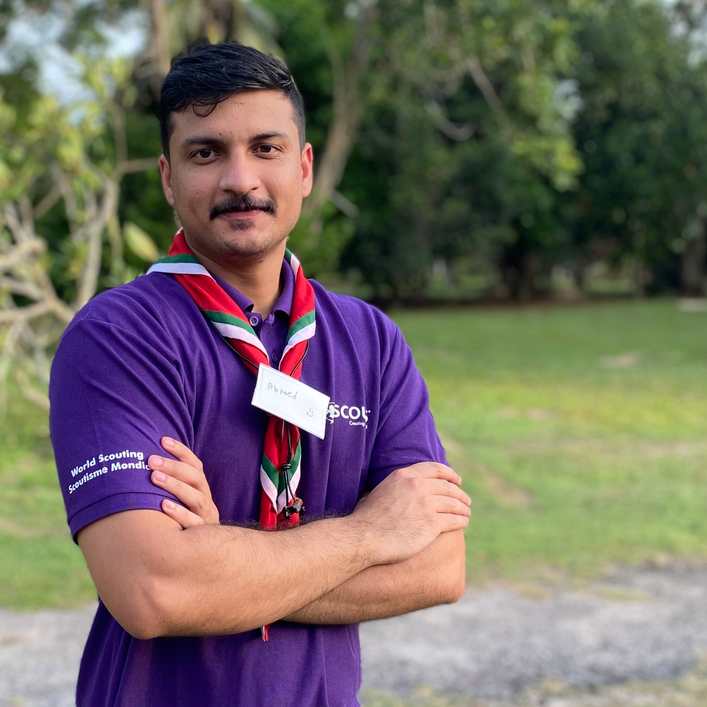

Hey there! I'm Ahmed Abdullah Al Mujaini, and I'm excited to share a bit about myself with you.
I specialize in business information systems and web development, areas where I've honed my skills and expertise. Currently, I'm a student at Gulf College, pursuing a degree in Business Information Systems, with a graduation expected in 2024. Throughout my academic journey, I've developed a strong foundation in programming, project management, and creative thinking, all essential skills in the field. My passion lies in leveraging technology to solve complex problems and create innovative solutions. I'm eager to apply my knowledge and skills to real-world projects, and I'm always looking for new challenges to tackle. Let's connect and explore how we can collaborate to achieve your goals!
